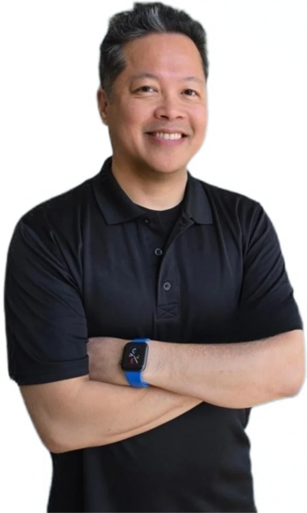

Meet the Doctor Christian S. Lopez, MD, MS, FACC

Dr. Christian S. Lopez, MD, MS, FACC is an experienced and highly accomplished non-invasive cardiologist in Maricopa County, AZ, specifically the vibrant Phoenix metropolitan area and its multiple Healthcare systems. He received his medical and Cardiology degrees from Temple University Medical Center in Philadelphia, PA, and has been in private practice since 2012. He moved to Arizona from Chicago, IL, in 2015 and continued both outpatient and inpatient cardiology services, serving as a Chair of Internal Medicine, Cardiology Medical Director, and a Member of the Medical Executive Committee during his time in the Abrazo & HonorHealth Hospital systems.
In addition to his experience in hypertension, dyslipidemia, coronary and peripheral arterial disease, heart failure, heart arrhythmias, pacemakers & other cardiac medical devices, non-invasive Electrophysiology, and syncope/autonomic dysfunction, he is proficient in the interpretation of advanced non-invasive cardiac testing such as echocardiography, stress testing, electrocardiograms (EKGs), and cardiac device monitoring/management.
With a focus on preventative Cardiology, he tailors personalized treatment plans that prioritize patient-centered outcomes and underscores his commitment to evidence-based, integrative approaches, blending conventional cardiology with naturopathic principles to promote holistic patient wellness and longevity. He fervently advocates proactive care over reactive treatment and emphasizes prevention as the cornerstone of heart health, empowering patients through education, lifestyle modifications, and diagnostic testing interpretation.
Providing out-patient Cardiology Consultation services only, Dr. Lopez is available to both new and returning patients with convenient telehealth and home-visit options when appropriate. Be it close management of chronic cardiovascular diseases or primary prevention of future major cardiovascular adverse events, he invites you to experience the difference of a truly personalized out-patient cardiology services — schedule your consultation today.
Areas of expertise
- Cardiac Pre-Operative Cardiovascular Assessment (Cardiac Clearance)
- Hypertension (high blood pressure)
- Heart Attack / Heart stents
- Heart Arrhythmias & Palpitations
- Heart block & pacemakers
- Congestive Heart Failure
- Cardiomyopathy and Defibrillators
- Atherosclerosis and Peripheral Arterial Disease
- Strokes
- High Cholesterol
- Syncope and Autonomic dysfunction
Highlights
- Non-invasive cardiologist with specialized training in electrophysiology.
- Served as Chief Cardiology Fellow during cardiology fellowship.
- Held leadership roles including Chair of Medicine, Medical Director of Cardiology, and member of the Medical Executive Committee across multiple health systems.
- Passionate about preventative cardiology, focusing on personalized, evidence-based strategies to optimize heart health and prevent cardiovascular disease.
Medical conditions treated
- Stable Angina
- Atrial Fibrillation
- Supraventricular Tachycardia (SVT)
- Bradycardia
- Carotid Artery Stenosis
- Coronary Heart Disease
- Endocarditis
- Pericarditis & Myocarditis
- Hypertrophic Cardiomyopathy
- Postural Orthostatic Tachycardia Syndrome (POTS)
- Secondary Pulmonary Hypertension
Education
- Advocate Health Care/ Illinois Masonic Medical Center - Fellowship Clinical Cardiac Electrophysiology 2009-2011
- Temple University Medical Center - Fellowship Cardiovascular Disease 2006-2009
- Rush University Medical Center - Residency Internal Medicine 2003-2006
- Lewis Katz School of Medicine -Temple University Class of 2003